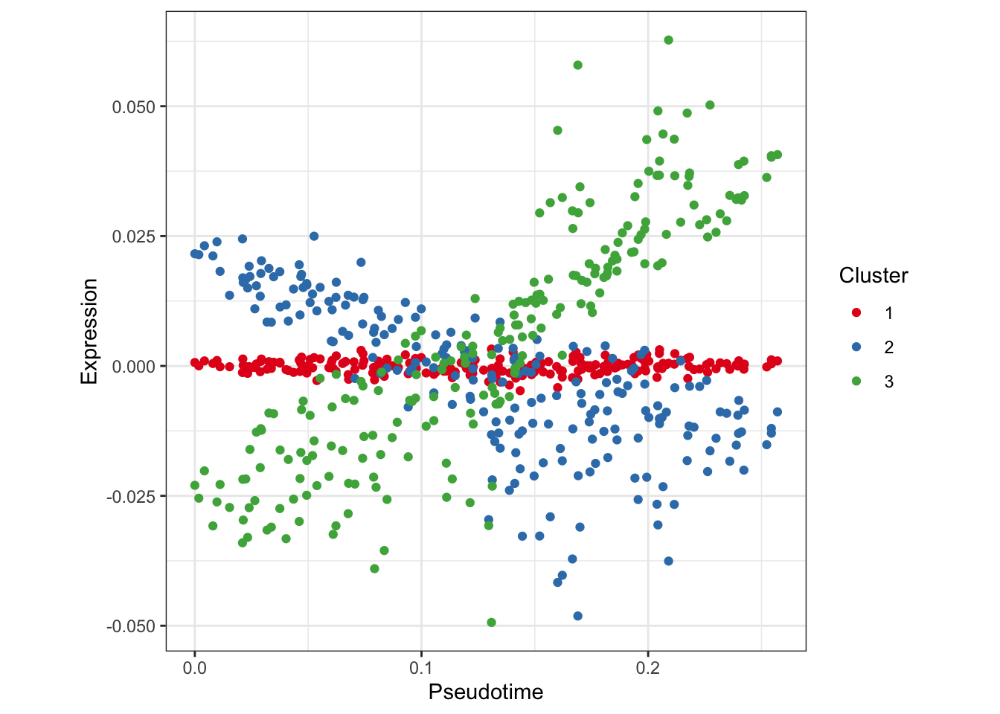
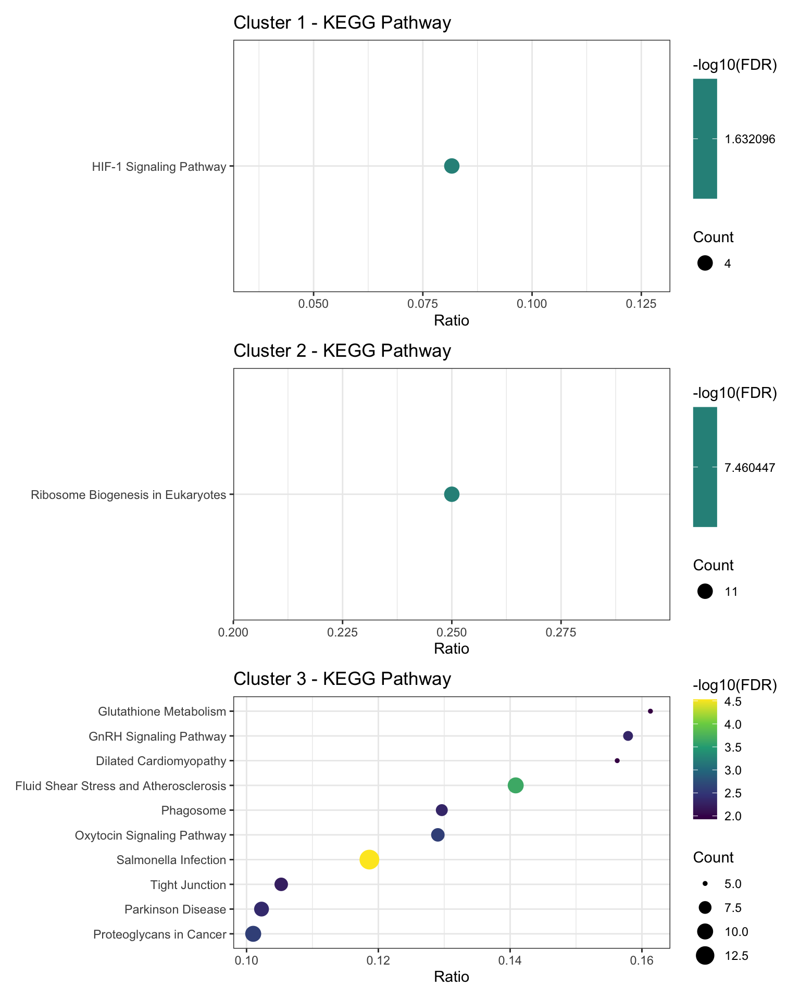
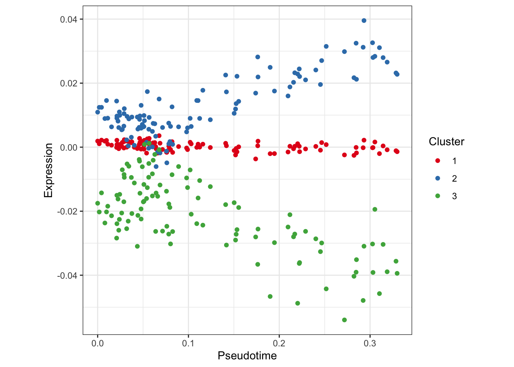
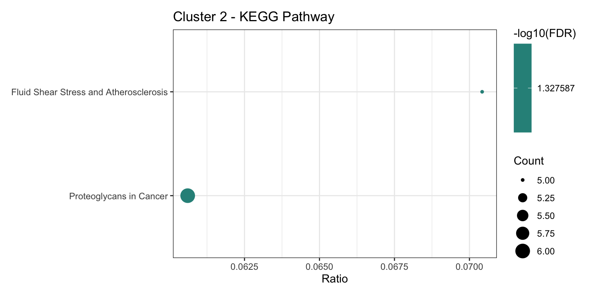

Last updated: 2020-11-05
Checks: 5 2
Knit directory: allantois/
This reproducible R Markdown analysis was created with workflowr (version 1.6.2). The Checks tab describes the reproducibility checks that were applied when the results were created. The Past versions tab lists the development history.
The R Markdown file has unstaged changes. To know which version of the R Markdown file created these results, you’ll want to first commit it to the Git repo. If you’re still working on the analysis, you can ignore this warning. When you’re finished, you can run wflow_publish to commit the R Markdown file and build the HTML.
Great job! The global environment was empty. Objects defined in the global environment can affect the analysis in your R Markdown file in unknown ways. For reproduciblity it’s best to always run the code in an empty environment.
The command set.seed(20200318) was run prior to running the code in the R Markdown file. Setting a seed ensures that any results that rely on randomness, e.g. subsampling or permutations, are reproducible.
Nice! There were no cached chunks for this analysis, so you can be confident that you successfully produced the results during this run.
Great job! Using relative paths to the files within your workflowr project makes it easier to run your code on other machines.
Great! You are using Git for version control. Tracking code development and connecting the code version to the results is critical for reproducibility.
The results in this page were generated with repository version 1cf3725. See the Past versions tab to see a history of the changes made to the R Markdown and HTML files.
Note that you need to be careful to ensure that all relevant files for the analysis have been committed to Git prior to generating the results (you can use wflow_publish or wflow_git_commit). workflowr only checks the R Markdown file, but you know if there are other scripts or data files that it depends on. Below is the status of the Git repository when the results were generated:
Ignored files:
Ignored: .Rhistory
Ignored: .Rproj.user/
Ignored: analysis/.DS_Store
Ignored: analysis/cache/
Ignored: data/.DS_Store
Ignored: data/.ipynb_checkpoints/
Ignored: data/01-allantois-correction.rds
Ignored: data/02-atlas-integration.rds
Ignored: data/03-trajectory-analysis.rds
Ignored: data/04-differential-analysis.rds
Ignored: data/07-trajectory-analysis-revisited.rds
Ignored: data/08-trajectory-analysis-strikes-back.rds
Ignored: data/EigenValues.csv
Ignored: data/EigenValues.rds
Ignored: data/EigenVectors
Ignored: data/EigenVectors.csv
Ignored: data/EigenVectors.rds
Ignored: data/Palantir-Diffusion.ipynb
Ignored: data/Palantir-MultiScale.ipynb
Ignored: data/SingleCellExperiment.rds
Ignored: data/Transitions.csv
Ignored: data/Transitions.rds
Ignored: data/allantois-kdr.rds
Ignored: data/allantois-wt.rds
Ignored: data/extractDiffusionMap.R
Ignored: output/.DS_Store
Ignored: output/atlas-batch.pdf
Ignored: output/atlas-batch.png
Ignored: output/atlas-celltype-2.png
Ignored: output/atlas-celltype.png
Ignored: output/atlas-kmeans.png
Ignored: output/atlas-label.png
Ignored: output/atlas-subset.pdf
Ignored: output/atlas-subset.png
Ignored: output/batch-corrected.pdf
Ignored: output/batch-umap.pdf
Ignored: output/batch-uncorrected.pdf
Ignored: output/celltype-corrected.pdf
Ignored: output/celltype-umap.pdf
Ignored: output/celltype-uncorrected.pdf
Ignored: output/correlate-etv2.png
Ignored: output/heatmap.png
Ignored: output/kmeans-cluster.pdf
Ignored: output/plot.pdf
Ignored: output/sleepwalk.html
Ignored: output/slingshot-gene.png
Ignored: output/slingshot-heatmap.png
Ignored: output/slingshot-pseudotime.png
Ignored: output/slingshot-trajectory-cell.pdf
Ignored: output/slingshot-trajectory-cluster.pdf
Ignored: output/slingshot-trajectory.pdf
Untracked files:
Untracked: code/SlingshotDynverse.R
Untracked: code/atlas-plots.R
Untracked: code/batch-corrected.R
Untracked: code/batch-umap.R
Untracked: code/batch-uncorrected.R
Untracked: code/celltype-corrected.R
Untracked: code/celltype-umap.R
Untracked: code/celltype-uncorrected.R
Untracked: code/scratch.R
Untracked: environment.yml
Unstaged changes:
Modified: analysis/09-trajectory-modules.Rmd
Modified: analysis/_site.yml
Note that any generated files, e.g. HTML, png, CSS, etc., are not included in this status report because it is ok for generated content to have uncommitted changes.
These are the previous versions of the repository in which changes were made to the R Markdown (analysis/09-trajectory-modules.Rmd) and HTML (docs/09-trajectory-modules.html) files. If you’ve configured a remote Git repository (see ?wflow_git_remote), click on the hyperlinks in the table below to view the files as they were in that past version.
| File | Version | Author | Date | Message |
|---|---|---|---|---|
| Rmd | 9219cba | James Ashmore | 2020-11-05 | publish |
Set chunk options:
knitr::opts_chunk$set(
autodep = TRUE,
cache = TRUE,
cache.path = "cache/09-trajectory-modules.Rmd/",
dev = "png",
error = FALSE,
message = FALSE,
warning = FALSE
)Load Bioconductor packages:
library(limma)
library(org.Mm.eg.db)
library(scater)
library(scran)Load CRAN packages:
library(ggplot2)
library(reshape2)Read experiment data:
sce <- readRDS("data/04-differential-analysis.rds")Define function to rescale the expression data:
rescale <- function(x) {
x <- as.matrix(x)
nsamples <- ncol(x)
M <- rowMeans(x, na.rm = TRUE)
DF <- nsamples - 1L
isNA <- is.na(x)
if (any(isNA)) {
mode(isNA) <- "integer"
DF <- DF - rowSums(isNA)
DF[DF == 0L] <- 1L
}
x <- x - M
V <- rowSums(x^2L, na.rm = TRUE) / DF
x <- x / sqrt(V + 0.01)
}Define function to reorder experiment data:
reorder <- function(x, subset, select) {
row <- subset %in% rownames(x)
col <- order(select)
x[row, col]
}Define wrapper for the goana function:
calculateGO <- function(query, subject) {
res <- goana(de = query, universe = subject, species = "Mm")
res <- split(res, res$Ont)
res <- lapply(res, function(x) x[order(x$P.DE, decreasing = FALSE), ])
res <- lapply(res, function(x) { x$FDR <- p.adjust(x$P.DE, method = "fdr"); x} )
res <- lapply(res, subset, FDR < 0.05)
return(res)
}Define function to visualise GO results:
visualiseGO <- function(results, n = 10) {
results <- head(results, n = n)
if (nrow(results) == 0) { return(ggplot() + theme_void()) }
results$Term <- tools::toTitleCase(results$Term)
results$Ratio <- results$DE / results$N
plt <- ggplot(results, aes(x = Ratio, y = stats::reorder(Term, Ratio), colour = -log10(FDR), size = DE)) +
geom_point() +
scale_colour_viridis_c() +
labs(x = "Ratio", size = "Count", colour = "-log10(FDR)") +
guides(colour = guide_colorbar(order = 1), size = guide_legend(order = 2)) +
theme_bw() +
theme(axis.title.y = element_blank())
return(plt)
}Define wrapper for the kegga function:
calculateKEGG <- function(query, subject) {
res <- kegga(de = query, universe = subject, species = "Mm")
res <- res[order(res$P.DE, decreasing = FALSE), ]
res$FDR <- p.adjust(res$P.DE, method = "fdr")
res <- sig <- subset(res, FDR < 0.05)
return(res)
}Define function to visualise KEGG results:
visualiseKEGG <- function(results, n = 10) {
results <- head(results, n = n)
if (nrow(results) == 0) { return(ggplot() + theme_void()) }
results$Pathway <- tools::toTitleCase(results$Pathway)
results$Ratio <- results$DE / results$N
plt <- ggplot(results, aes(x = Ratio, y = stats::reorder(Pathway, Ratio), colour = -log10(FDR), size = DE)) +
geom_point() +
scale_colour_viridis_c() +
labs(x = "Ratio", size = "Count", colour = "-log10(FDR)") +
guides(colour = guide_colorbar(order = 1), size = guide_legend(order = 2)) +
theme_bw() +
theme(axis.title.y = element_blank())
return(plt)
}Rescale the expression data prior to clustering:
assay(sce, "rescaled") <- rescale(assay(sce, "reconstructed"))Define a set of background universe genes:
dec <- modelGeneVar(sce, block = sce$batch)
hvg <- getTopHVGs(dec, var.threshold = 0) # take all genes with biological variation
ens <- rowData(sce)$gene_id[match(hvg, rownames(sce))]
uni <- mapIds(org.Mm.eg.db, keys = ens, column = "ENTREZID", keytype = "ENSEMBL")Extract association test results from experiment metadata:
res <- metadata(sce)$associationTestCreate data frame of association test results for slingPseudotime_1 lineage:
sp1 <- data.frame(
waldStat = res$slingPseudotime_1$waldStat_1,
df = res$slingPseudotime_1$df_1,
pvalue = res$slingPseudotime_1$pvalue_1,
fdr = p.adjust(res$slingPseudotime_1$pvalue_1, method = "fdr"),
row.names = rownames(res$slingPseudotime_1)
)Reorder experiment data by slingPseudotime_1 lineage:
sc1 <- reorder(sce, subset = rownames(sp1), select = sce$slingPseudotime_1)
use <- !is.na(sc1$slingPseudotime_1)
sc1 <- sc1[, use]Cluster expression patterns of significant genes in slingPseudotime_1 lineage:
set.seed(515499208)
km1 <- kmeans(x = assay(sc1, "rescaled"), centers = 3)
sp1$cluster <- km1$cluster[rownames(sp1)]Plot clustered expression patterns to see how they behave across the slingPseudotime_1 lineage:
clust.centroid <- function(i, assay, cluster) {
ind <- (cluster == i)
colMeans(assay[ind, ])
}
lvl <- unique(km1$cluster)
df1 <- sapply(lvl, clust.centroid, assay(sc1, "rescaled"), km1$cluster)
df1 <- melt(df1)
colnames(df1) <- c("cell", "cluster", "exprs")
df1$pseudotime <- sc1$slingPseudotime_1[df1$cell]
ggplot(df1, aes(pseudotime, exprs, group = cluster, colour = as.factor(cluster))) +
geom_point() +
scale_colour_brewer(name = "Cluster", palette = "Set1") +
labs(x = "Pseudotime", y = "Expression") +
theme_bw() +
theme(aspect.ratio = 1)
Test for enrichment of KEGG pathways within each cluster:
ens <- rowData(sc1)$gene_id[match(rownames(sp1), rownames(sc1))]
ids <- mapIds(org.Mm.eg.db, keys = ens, column = "ENTREZID", keytype = "ENSEMBL")
ids <- split(ids, sp1$cluster)
res <- lapply(ids, function(x) calculateKEGG(query = x, subject = uni))
res <- Filter(nrow, res)
lvl <- names(res)
plt <- lapply(lvl, function(x) visualiseKEGG(res[[x]], n = 10) + ggtitle(paste0("Cluster ", x, " - KEGG Pathway")))
patchwork::wrap_plots(plt, ncol = 1)
Extract association test results from experiment metadata:
res <- metadata(sce)$associationTestCreate data frame of association test results for slingPseudotime_2 lineage:
sp2 <- data.frame(
waldStat = res$slingPseudotime_2$waldStat_2,
df = res$slingPseudotime_2$df_2,
pvalue = res$slingPseudotime_2$pvalue_2,
fdr = p.adjust(res$slingPseudotime_2$pvalue_2, method = "fdr"),
row.names = rownames(res$slingPseudotime_2)
)Reorder experiment data by slingPseudotime_2 lineage:
sc2 <- reorder(sce, subset = rownames(sp2), select = sce$slingPseudotime_2)
use <- !is.na(sc2$slingPseudotime_2)
sc2 <- sc2[, use]Cluster expression patterns of significant genes in slingPseudotime_2 lineage:
set.seed(525499208)
km2 <- kmeans(x = assay(sc2, "rescaled"), centers = 3)
sp2$cluster <- km2$cluster[rownames(sp2)]Plot clustered expression patterns to see how they behave across the slingPseudotime_2 lineage:
clust.centroid <- function(i, assay, cluster) {
ind <- (cluster == i)
colMeans(assay[ind, ])
}
lvl <- unique(km2$cluster)
df2 <- sapply(lvl, clust.centroid, assay(sc2, "rescaled"), km2$cluster)
df2 <- melt(df2)
colnames(df2) <- c("cell", "cluster", "exprs")
df2$pseudotime <- sc2$slingPseudotime_2[df2$cell]
ggplot(df2, aes(pseudotime, exprs, group = cluster, colour = as.factor(cluster))) +
geom_point() +
scale_colour_brewer(name = "Cluster", palette = "Set1") +
labs(x = "Pseudotime", y = "Expression") +
theme_bw() +
theme(aspect.ratio = 1)
Test for enrichment of KEGG pathways within each cluster:
ens <- rowData(sc2)$gene_id[match(rownames(sp2), rownames(sc2))]
ids <- mapIds(org.Mm.eg.db, keys = ens, column = "ENTREZID", keytype = "ENSEMBL")
ids <- split(ids, sp2$cluster)
res <- lapply(ids, function(x) calculateKEGG(query = x, subject = uni))
res <- Filter(nrow, res)
lvl <- names(res)
plt <- lapply(lvl, function(x) visualiseKEGG(res[[x]], n = 10) + ggtitle(paste0("Cluster ", x, " - KEGG Pathway")))
patchwork::wrap_plots(plt, ncol = 1)